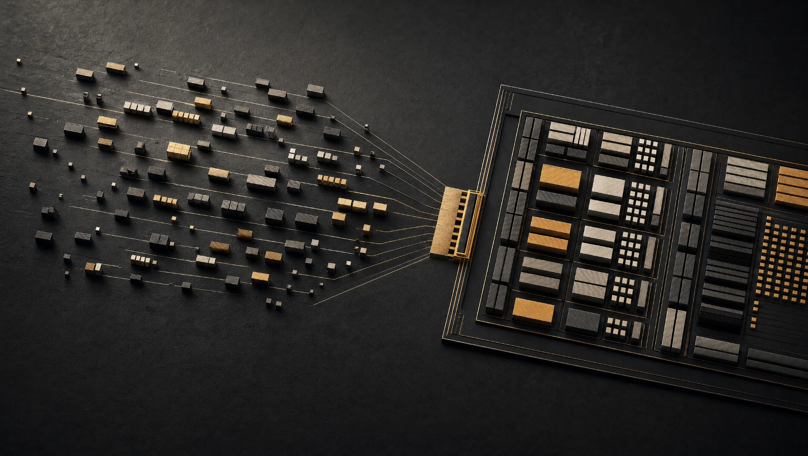
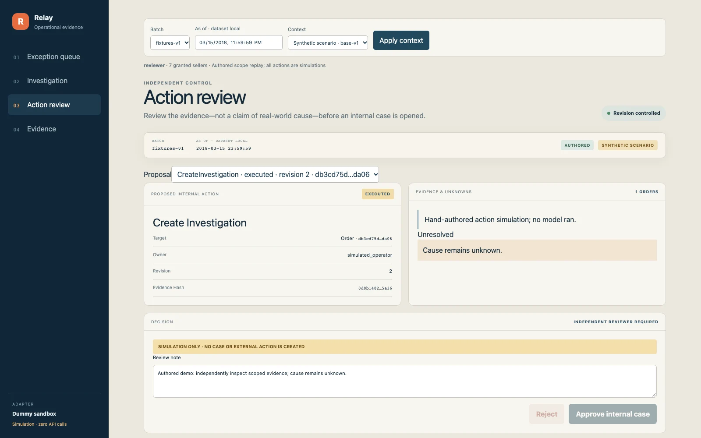

Fragmented context
One order may touch multiple sellers. A relationship view should explain those links without suggesting a cause the data does not contain.
Operational AI / a product case study
BUILD → EVALUATE → DECIDE
OCTOBER 2026
Turn delivery exceptions into scoped, reviewable investigations. Not unsupported explanations. Not autonomous customer actions.
Evidence linked. Uncertainty explicit.
A separate, scoped reviewer decides.
Conceptual workflow · not a live job or model result

01 / Why this exists
The operator’s decision is narrow: is there enough evidence to open an internal investigation, and which orders belong together?
The work is connecting facts without turning relationships into blame.
Orders, lines, sellers and products live in separate tables. A queue flags exceptions, but the operator still needs the right context, exact totals and a defensible next step.
Rules can identify late, undelivered orders. AI was tested for a different hypothesis: could structured relationships help an assistant assemble a useful, evidence-linked investigation? The project tested that hypothesis rather than assuming AI was necessary.
One order may touch multiple sellers. A relationship view should explain those links without suggesting a cause the data does not contain.
Seeing one seller does not authorize the whole order. Hidden records must not leak through graphs, counts or totals.
Even an internal case needs independent review, current eligibility and a durable audit trail. Customer contact and commerce mutations are out of scope.
Product thesis
Let AI interpret the evidence.
Let software enforce the boundary.
The ontology is a typed business contract, not a graph database. It defines what relationships mean, what evidence can support a proposal, and which actions the system is allowed to take.
02 / How it works
Follow the path from an immutable commerce snapshot to a human-approved internal case. Select a stage to inspect the contract.
Import all five Olist files. Validate every header, quarantine invalid rows with reason codes, and preserve source provenance. An as_of timestamp prevents future events from entering the investigation.
03 / System architecture
A synchronous, scoped workspace sits beside a durable asynchronous AI path. The API cannot invoke Bedrock. The worker cannot approve a case.
01 / Experience & authorized reads
02 / Asynchronous reasoning
Worker reads the DB outbox → sends to SQS → consumes jobs → checkpoints tools and writes results to PostgreSQL. The API reads job state; it does not call the model.
This is a responsibility overview, not a subnet map. Native AWS symbols are extracted from the repository’s draw.io export. Explore the source-linked async path ↗ · Inspect the full topology ↗ · Editable draw.io source. Demo tradeoff: TLS terminates at CloudFront; the origin leg is HTTP. Prefix-list restrictions are not distribution-specific authentication.
04 / The AI decision loop
Two model stages. At most three allowlisted tools. A strict validator. Then a different person with independent scope.
Returns a schema-checked plan. Cannot run SQL or invent new tools.
Interprets supplied evidence and drafts findings. Does not calculate authoritative totals or execute actions.
Checks IDs, citations, synthetic provenance and unsupported causal language. Invalid JSON fails without a repair loop.
Cannot approve their own proposal. Current scope, revision, evidence and case uniqueness are checked again.
A valid proposal can enter review. Only a distinct, scoped reviewer can create the internal case after all execution-time checks pass.
Illustrative policy walkthrough, not a live model request. No data is submitted and no case is created. Agent contracts ↗ · Approval enforcement ↗
05 / What the evidence says
The important result is the product decision. The candidate did not earn its added complexity against B0, the deterministic workspace, on the frozen gold-v1 benchmark.
B0 uses deterministic queries. B1 gives the model flat evidence. The candidate gives it typed ontology evidence.
+2.3 percentage points vs B1. Still 41.9 points below B0. Candidate relationship recall: 0.114.
Within-family Nova generation comparison, not a cross-vendor ranking. Run of record: 18 October 2026. Local PostgreSQL on the owner’s laptop + real Bedrock in us-east-2, through the production consumer path. Not a deployed-stack model benchmark.
B0 is perfect by construction: gold-v1’s expected answers come from the same kind of deterministic queries. This benchmark cannot show an AI advantage. Human investigation time and ROI remain untested. The next investment is a usability and timing study—not more model spend.
20 readers through CloudFront to one 0.25 vCPU API task. A read-path result, not AI latency.
Crash/redelivery, unknown outcome, breaker opening and poison-message DLQ. Fault injection, not production incidents.
Strict JSON rejection. No repair loop. A visible failure rate, not a silently corrected success metric.
| Generation / mode | B0 | B1 | Candidate | Candidate recall |
|---|---|---|---|---|
| Nova Lite / real only | 100% | 27.9% | 32.6% | 0.530 |
| Nova Lite / scenario | 100% | 25.0% | 46.7% | 0.491 |
| Nova 2 Lite / real only | 100% | 55.8% | 58.1% | 0.114 |
| Nova 2 Lite / scenario | 100% | 41.7% | 41.7% | 0.066 |
No statistical test was run. Precision was 1.000 across cells, but recall failed the 0.95 target. Server-filled or checked selections constrain precision; it is not equivalent to overall task success.
There were 783 admitted paid calls across 404 jobs; eight hidden-order cells were refused before a job existed. The gold freeze was owner-authorized, but item-by-item review was not separately evidenced.
Later validation finding: M6 recording exposed a synthetic-context finding accepted without synthetic evidence. A citation guard and five regression tests were added afterward. The scores above predate that fix and do not measure it.
Results and methodology ↗ · Run-of-record artifact ↗ · Retained failure evidence ↗
06 / Real product evidence
Actual captures of the implemented React workspace. Explore the same authored fixture experience in the static sandbox.

A graph, an evidence table and a detail drawer share the same scoped context. Seller fulfillment is a relationship—not an explanation of delay.

Inspect the evidence, proposal and review state. Static approval is a simulation; the backend’s independent-review controls are tested separately.
AUTHORED FIXTURES ONLY · STATIC ACTIONS ARE SIMULATED · NO API CALLS
These captures are not live Bedrock output or current AWS deployment evidence.
07 / Reliability & trust
Authorization is upstream of evidence. Human approval is downstream of validation. Durable state keeps a repeated message from becoming a repeated action.
Historical deployed fault injection / 4 passes
SQS redelivery produced one case. A repeated approval returned 409. Checkpoints and transactional uniqueness protect the action boundary.
The job entered an unknown hold. It was not retried. SDK retries are disabled; an ambiguous paid call is not treated as a free retry.
Five known rejections opened the process-local circuit breaker. The sixth job was refused without model admission. A fleet-wide breaker is not implemented.
After five receives, the message moved to the DLQ and the CloudWatch alarm entered ALARM.
All sellers, or no order. Explicit grants are required for every seller on an order. An order split across the two operators is invisible to both—including in counts and graph nodes.
Authentication is not authorization. Cognito PKCE establishes identity. Current database grants establish scope before data is joined or serialized.
Approval is checked twice. The reviewer must be a different person and hold scope over every target. Execution rechecks evidence, revision, ontology version, eligibility and equivalent-case uniqueness.
Least privilege across runtimes. The API role has no Bedrock permission. The worker has no approval authority. Database access is separated by application role.
08 / Data, without ambiguity
The complete five-file Olist import—not a sample. Invalid rows retain reason codes. Public demos contain authored fixtures only, not Olist records.
Inspect the measured import report ↗Orders, order items, customers, sellers and products. Every source table records provenance. The ontology connects these business objects without adding a graph database or vector store.
Dataset-local as_of hides future events. Late open means 1–30 days after the estimated date, with no delivery known at that time. Money uses integer centavos with Decimal rounding, not floating-point arithmetic.
Authored carrier and disruption context is synthetic, scenario-scoped and badged in the UI. Real-only jobs do not read synthetic tables. Olist does not establish a carrier or the true cause of a delay.
Gold-v1 freezes questions, expected answers and policy. There is no fine-tuning or train/test split claim. Olist’s CC BY-NC-SA 4.0 terms remain relevant to reuse.
09 / Product judgment
The interesting choices are the things this system deliberately does not do.
Inspect the decision record ↗Typed relationships give tools and proposals a shared business vocabulary. PostgreSQL remains the source of truth; Cytoscape renders the scoped graph.
Graph traversal is purpose-built and bounded to the named workflow. This is not a general knowledge-graph platform.
A transactional outbox, SQS and a checkpointed worker decouple model latency from the API. Job state survives delivery retries.
More lifecycle states and queue operations. Deployed AI jobs took 10–16 seconds, including relay and queue overhead.
Strict Pydantic contracts and deterministic evidence checks make failure visible. An unknown paid outcome is held, not retried or silently routed to another model.
68 of 404 evaluation jobs failed the JSON contract. Reliability at the action boundary does not imply high model task success.
A model may propose CreateInvestigation or a recipient-free internal draft. Only an independently scoped reviewer can authorize execution.
Human review adds friction. The system cannot send a customer message, modify commerce records, move inventory or issue a refund.
Public-IP Fargate tasks avoid a NAT gateway. Security groups constrain ingress; PostgreSQL stays in isolated subnets with TLS.
Single-AZ RDS is not high availability. CloudFront-to-ALB HTTP and a shared prefix list need hardening before a production claim.
The candidate did not beat B0 by the frozen meaningful-margin rule. A deterministic workspace is the defensible starting point.
The benchmark does not measure human value from narrative evidence. That remains a study to run, not a benefit to claim.
10 / Beyond the diagram
React 19 / TypeScript / Vite / Tailwind 4 / TanStack Query / Cytoscape.js
FastAPI / Pydantic 2 / SQLAlchemy 2 / psycopg 3 / Alembic / PostgreSQL 16
Custom bounded planner and analyst / boto3 Bedrock Converse / strict client-side validation
Python CDK v2 / ECS Fargate ARM64 / ECR / GitHub Actions / CloudWatch
pytest / Ruff / Playwright / frozen evaluation harness / MLflow 3, local only
Actor scope, batch, as_of and scenario.
Model, prompt hash, code commit and comparator.
Tool checkpoints, evidence references and snapshot hashes.
Strict-contract failures, validation and proposal state.
Returned token usage, latency and list-price cost estimates.
MLflow logs local comparison runs, parameters, numeric metrics and the report artifact. CloudWatch held runtime logs and queue alarms. Audit events are written with action transactions. This is traceability—not a promise of identical model regeneration.
Implementation anchorsPOST /api/jobs · idempotency keyGET /api/jobs/{id} · ETag pollingPOST /api/proposals/{id}/decision · expected revision
11 / Cost & lifecycle
Evaluation inference / run of recordList-price estimate from returned usage across 783 admitted calls. Not the AWS invoice.
Estimated infrastructure / month while runningBase estimate. Variable-service charges were unknown; billing lag is not evidence of zero spend.
Stack and bootstrap torn downResource checks found no retained billable resources in the checked inventory. This does not erase historical charges.
12 / What comes next
M1–M6 completed. Deploy, load test, drill failures, compare against B0, preserve results, then tear down.
Test B0 usability and investigation time first. Revisit AI only with an owner-reviewed benchmark that can measure its value. Harden origin security and availability before a production rollout.
Consider scoped caching or a read replica only after indexed reads miss the latency target. A second worker requires a fleet-wide breaker; queue depth should justify worker scaling.
The takeaway
Product strategyA narrow operational decision, with explicit non-goals and an untested value hypothesis.
System ownershipData contracts, scoped queries, UI, worker, infrastructure and teardown.
Reliability engineeringAction boundaries tested under redelivery, timeouts and provider failure.
Evaluation judgmentA recommendation that favors the deterministic baseline over the more complex build.